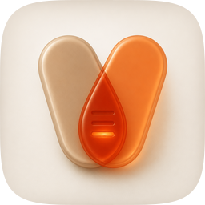
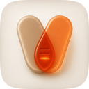
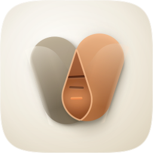
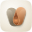
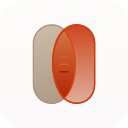

| Take | Renders at 128 / 64 / 48 / 32 / 16 css px (2× retina sources), plus the 16px squint magnified | Rubric | Verdict |
|---|---|---|---|
| C · icon.pngGPT Image 2 raster, corpus-referenced — SHIPS as the tile |
  |
11 / 12 | Wins the material read outright and, unexpectedly, the small-size read as well: at 32px the V is unmistakable and the lens is a single bright ember teardrop dead centre, where the vector master goes to a grey mass beside a tan one. Real translucency — the clay capsule is visible THROUGH the amber one — an almond blend that carries its own lit boundary, and an emissive bar that lights the trough it lies in. Masked to the set superellipse from squircle-path.txt, so the silhouette is byte-identical to every sibling. Checks 1-4 pass on the real renders. Loses #10: it is a flat raster, so its identity is a colour relationship that will not survive Dark/Clear/Tinted. |
| A · icon.svghand-authored layered SVG — the editable master, not yet the tile |
  |
10 / 12 | The canonical layered master: bg / mid / fg / highlight as real groups, geometry and material as named constants, so #10 holds by construction and every future round is a parameter edit. Measured against take C over eight rounds it reached a five-size mean composite of 0.699 from a 0.655 baseline, with the geometry SOLVED numerically rather than by eye after four rounds of guessing (the pair kept coming out 74-87% of the tile wide because a low pivot swings each top outward by (pivot - top)·sin(lean)). Fitted to the reference's own measured numbers — disjoint capsules across the upper third, a 60%-wide union, a fifth of the union in the crossing — it now splays as a real V with a 3.95:1 figure-ground at 16px. What it still lacks is C's material: the clay body reads flat and grey rather than translucent, and the lens rim is faint. Round r07 tried lightening the clay for a stronger crown, lost figure-ground with the porcelain field — clarify's documented failure — and was reverted at a cost of 0.004 composite. Rubric outranks gate. |
| B · geminify-engineB-arrow-03ba9b.svgArrow 1.1 vector take — loser, kept for its agreement |
 |
6 / 12 | Independently confirms the composition: briefed from the same spec, blind to both the master and the raster, it also built two overlapping capsules with a pointed almond and three tally bars, which is what justified spending rounds on that arrangement rather than treating it as one opinion. Loses on material and on two non-negotiables: it BAKED a rounded-corner artboard mask (check 1) after being told not to, and it has no lean at all, so the pair reads as two parallel slabs rather than a V. Flat fills, no crown, no contact shadow, no emission. Nothing salvaged into the master beyond the confirmation. |